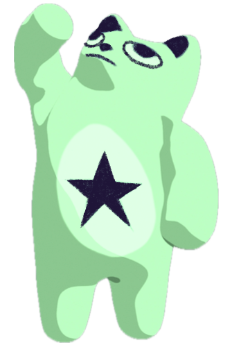
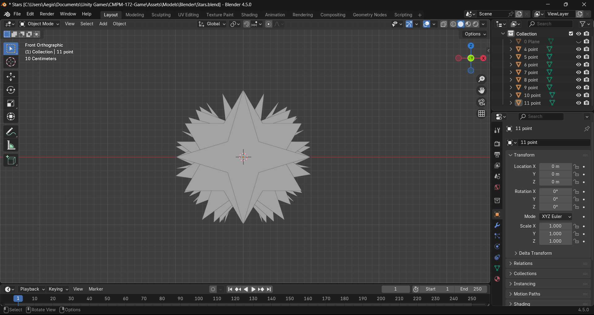
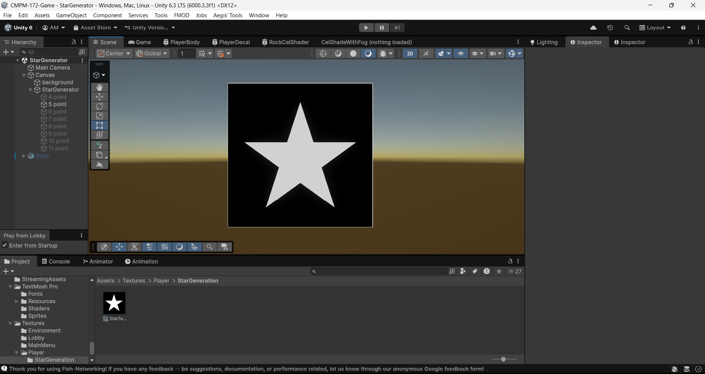
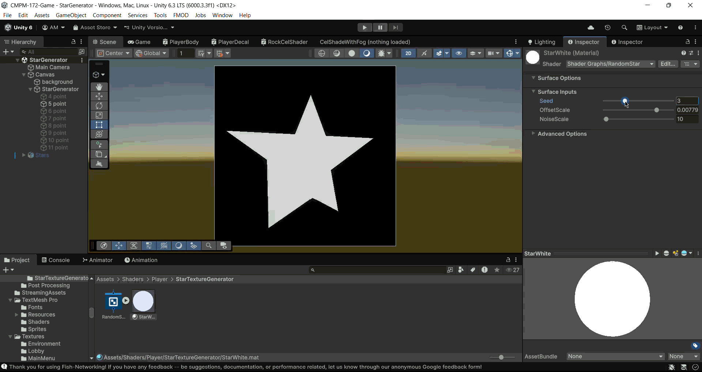
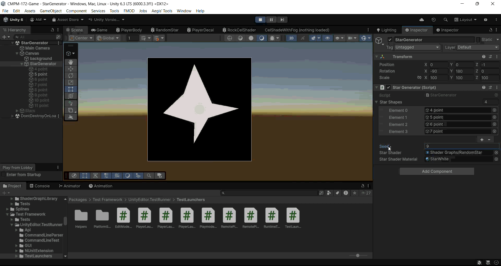
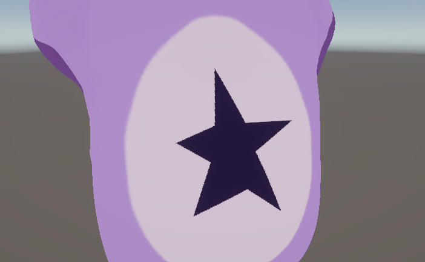
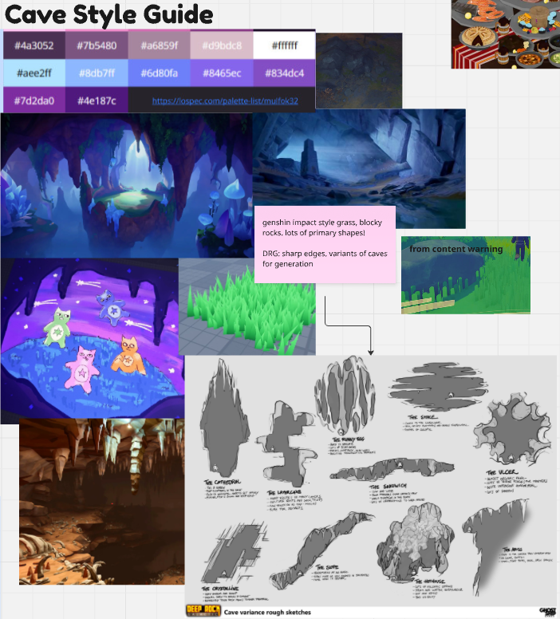
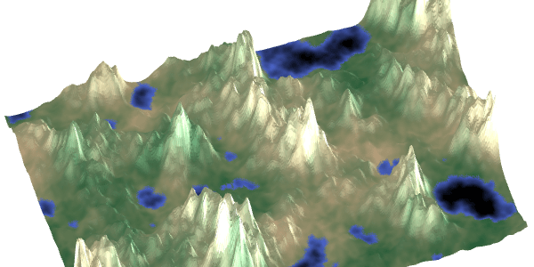

I'm currently working on a 3D "friendslop" game called stardozing. In this game, you play as a little star-bellied catbear, which looks a little something like this.

We knew pretty early that we wanted them to be customizable, as we're hoping to support players in
building a connection to their character and differentiate themselves from their friends, and
set up a fun and simple way to reward player's efforts.
At some point, I had the idea that the stars on the starbears' bellies could be randomized somehow,
and that they'd be tied to the Steam ID of each player. That way, they'd be completely personalized
for each player--and better yet, it'd be really enticing; "you've got a special star design waiting
for you and you won't know what it is until you give the game a try!"
Here's a little snippet from our Miro board.

Knowing I planned to use vertex displacement to make some funky star shapes, the first thing I did was hop into Blender and model some stars, making an object for four through eleven pointed stars.

Bringing them into Unity, I set up a little scene with a camera rendering to a render texture. Later on, I plan to make a copy of this texture on the actual starbear. For now, it just looks like we're about to listen to the Stone Temple Pilots.

Moving on, I set up a little shader that takes in an integer "seed" value, as well as two configurable parameters for the noise scale and offset, to displace each vertex of the star based on the seed input.

Next, I used the seed to randomly determine which star to activate. At this point, I realized that eight through eleven pointed stars look pretty awkward when randomly displaced, so I excluded them for now.

My next step was to connect that render texture to the starbear's star material, which put a funky shaped star on there, like this!

This is as far as I've got for now, as we're buckling on gameplay at the moment, but look forward to updates soon!
I'm currently a Technical Designer on stardozing, a 3D multiplayer 'friendslop' game about cave diving and throwing your friends around! As we ideated the
game and analyzed others of the same genre as we were getting started, we noted that procedural generation would be an absolute necessity for our game.
Taking after games like Peak and Lethal Company, map generation, paired with player interaction, are the two primary driving forces for gameplay variety and
replayability. We began development with this notion, and a great cave aesthetic/composition moodboard put together by our creative director,
Sofia Aminifard.

When it became time for us to actually start developing a map generator, we started by laying out some base goals.
No ‘Hard’ Dead-Ends
After some debate, we decided it’d be best if there was never a true dead-end that fully prevented players from continuing down their path. But,
inspired by Peak, we were more than happy with the idea of what we called a ‘soft’ dead end. With our future plans for
various movement strategies and items, our ideal map generator would never stop players from continuing if they were truly determined
and willing to expend enough resources.
Well Tuned
To achieve the replayability we were hoping for while maintaining our cave diving aesthetic experience and keep the game feeling focused,
we wanted just the right amount of randomness.
Modular
We’re very much in the process of ‘bottom up’ designing stardozing, and want to have the flexibility to pivot and expand on our map
generator as we see fit. For example, we already have plans forming for different biomes.
Deterministic
We want to ensure that, given a seed, we’ll always generate the same map. This is absolutely pivotal, as our
current plans for syncing maps between each player is to give them each the same seed, and trust that they generate the same map.
Fast
We don’t want to keep players waiting!
With our goals in mind, I began researching and ideating potential approaches to procedural map generation. My mind initially went to the true classic for terrain generation: using layered noise for a height map. I quickly ruled that out for the fatal flaw in that caves are roughly circular, and height maps don’t even allow for overhangs, let alone full cave systems.

That line of reasoning (and research) led me to my next potential idea: subtraction in a voxel grid to carve out a cave, paired with marching cubes triangulation to generate the actual playable space. This had some distinct advantages—subtractive generation seems to closely mirror cave formation via erosion, which could lead to some pretty convincing caves, like in Minecraft!
My main problem with that idea was that, honestly, I’ve never worked with voxel grids or runtime mesh generation. And this project, while super fun, seemed at least intermediate in these fields, and I wasn’t confident I could deliver for my team on time. So, back to the drawing board.